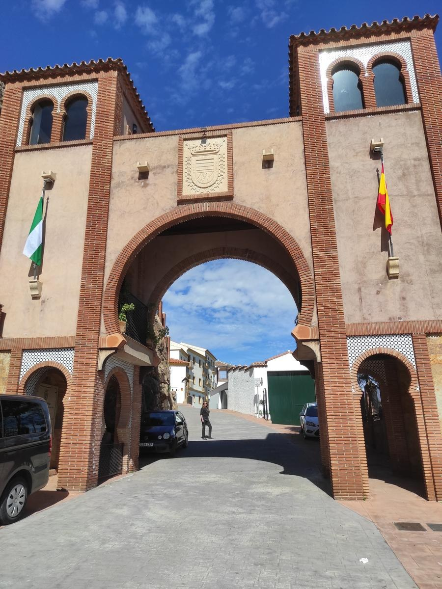
HALTE 01
Het Balkon van de Axarquía
Smalle straatjes, witte huizen en verhalen hoog boven de heuvels.
Beluister de audio’sBekijk de routeWelkom in Comares, het ‘Balkon van de Axarquía’. Dit witte bergdorp ligt hoog boven de heuvels en biedt prachtige uitzichten tot aan de Middellandse Zee. Wandel door smalle straatjes en langs sfeervolle pleintjes, en ontdek de sporen van het Moorse verleden en de levendige traditie van de verdiales.
Met deze Nederlandstalige audiogids leer je onderweg de verhalen achter de bijzondere plekken kennen. Volg de wandelroute en beluister bij elke halte de bijhorende audio, op je eigen tempo.
De lijn volgt het aangeleverde GPX-bestand. De audio’s speel je hieronder zelf af. Voor de kaart en audio’s heb je internet nodig.
Download de GPX-route ·Kies je halte en druk op ▶. Wanneer je een andere audio start, pauzeert de vorige automatisch.

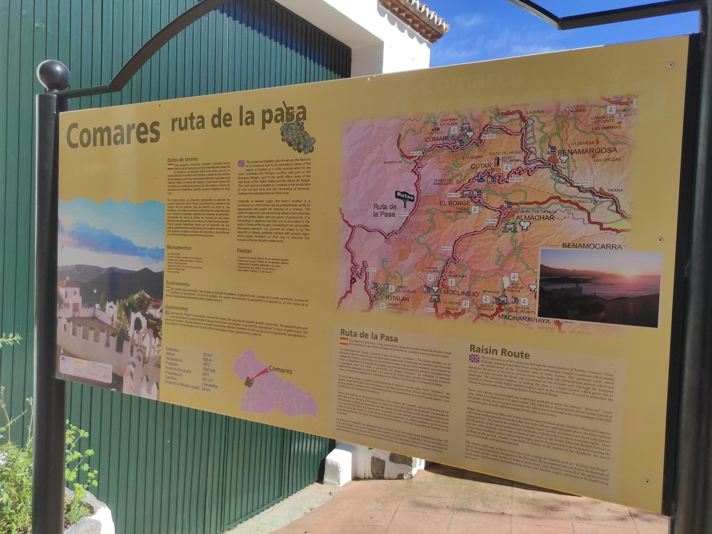
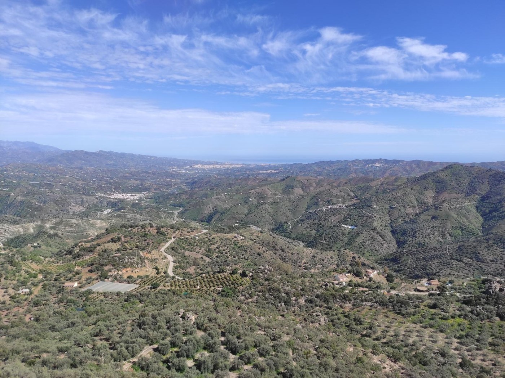
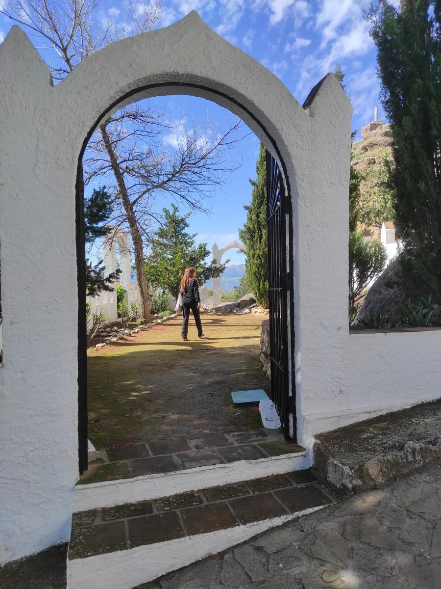
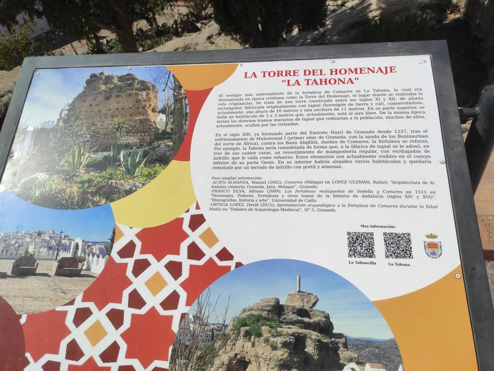
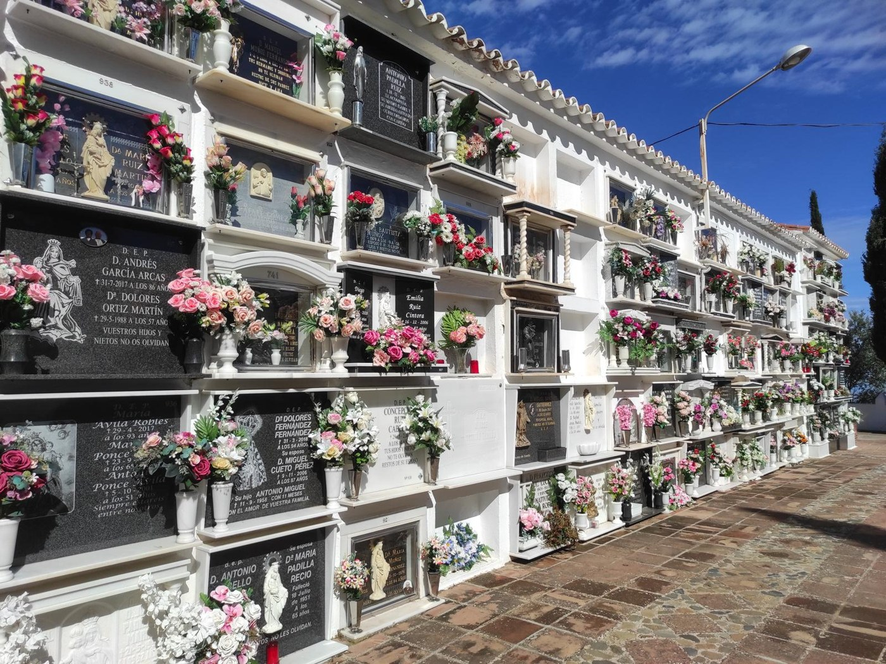
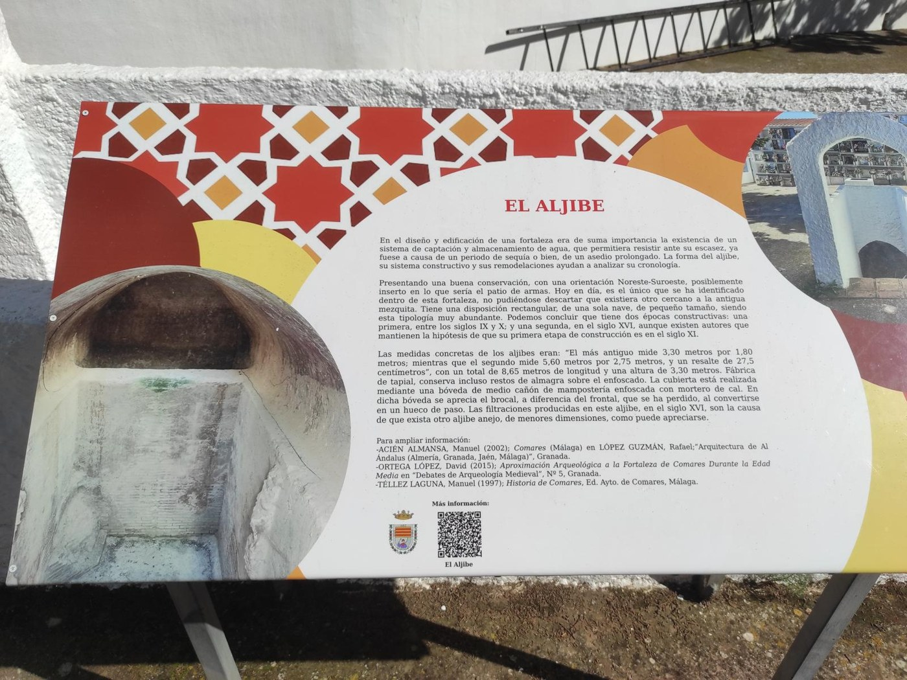
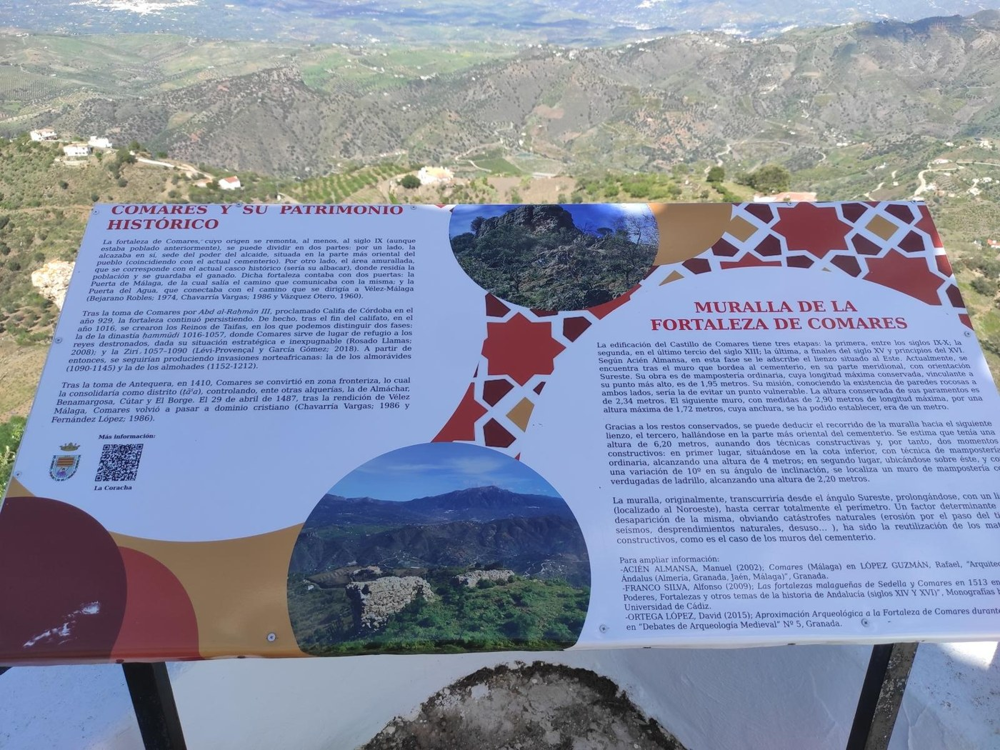
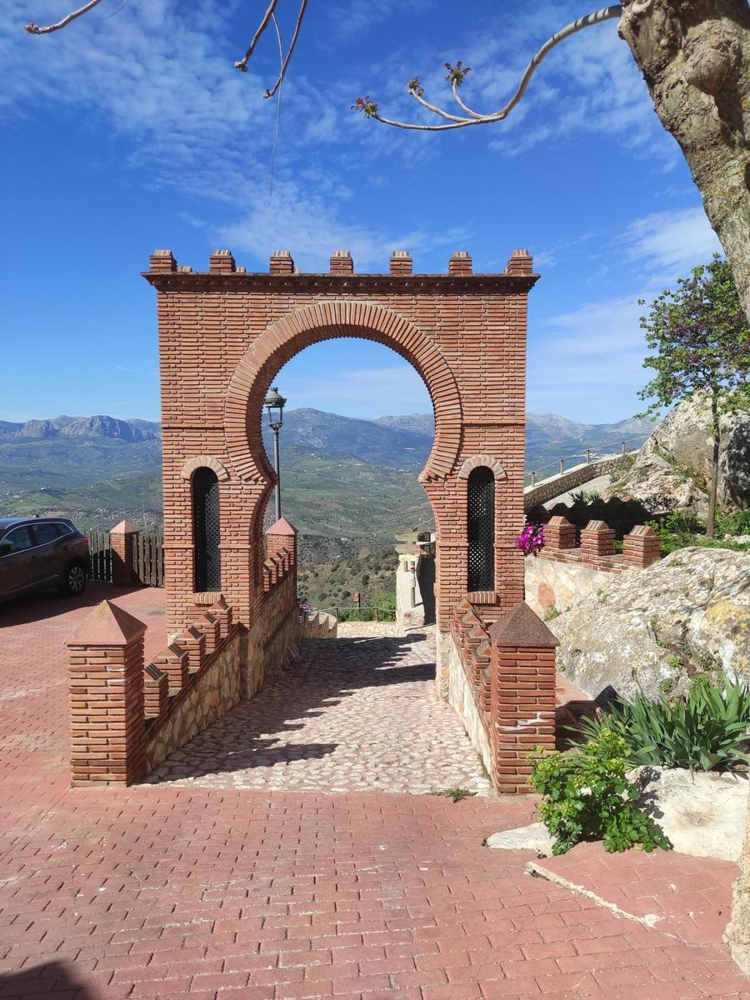
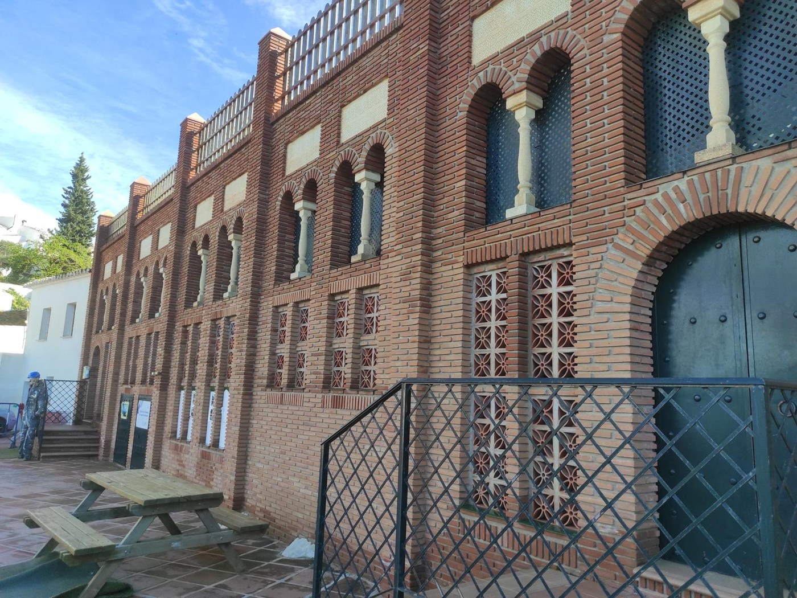
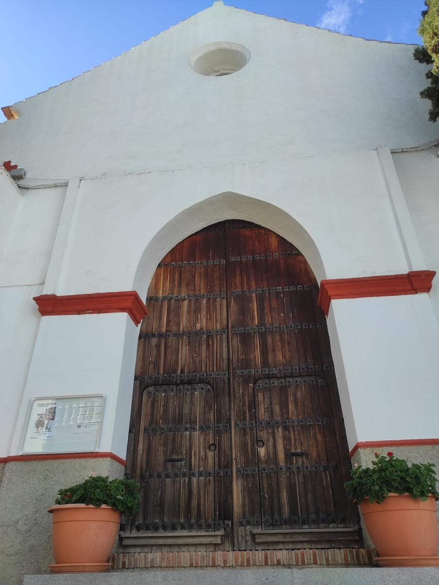
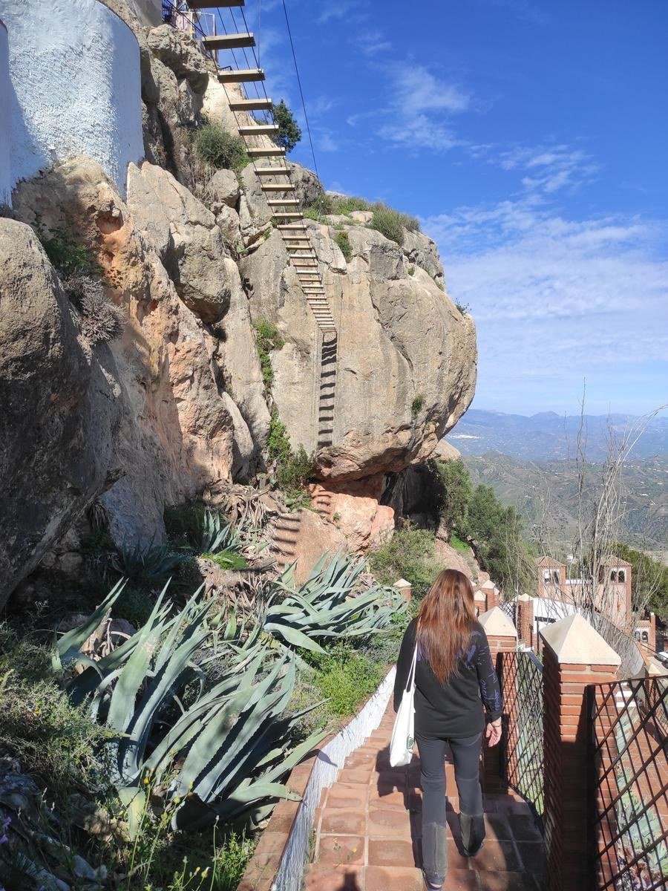
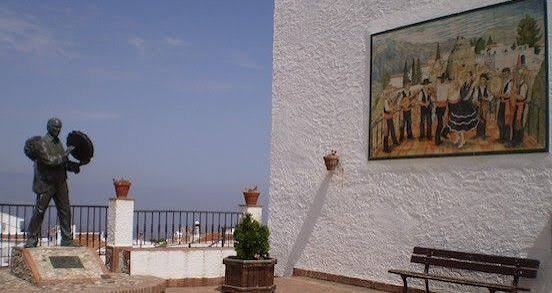